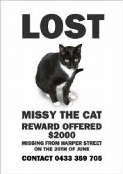
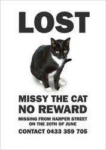

Очень смешно, читать всем )))
У Шэннон (секретарши) потерялась кошка и она попросила Дэвида (дизайнер) помочь ей с объявлением о пропаже.
Вот их переписка. Читать как положено - сверху вниз.
From: Shannon Walkley
Date: Monday 21 June 2010 9.15am
To: David Thorne
Subject: Poster
Привет!
Я вчера открыла сетку на двери, моя кошка выскочила на улицу и с тех пор не появлялась.
Я подумала, что если ты не очень занят, не мог бы ты нарисовать для меня объявление?
Оно должно быть формата А4, я наделаю с него копий и расклею у себя в районе.
Это ее единственное фото. Она отзывается на имя Мисси, она черно-белая, примерно 8 месяцев.
Пропала на Харпер Стрит. И мой номер.
Спасибо, Шэн
From:David Thorne
Date: Monday 21 June 2010 9.26am
To: Shannon Walkley
Subject: Re: Poster
Дорогая Шэннон.
Это ужасная новость. Пара клиентов, правда, расчитывает чтобы я сдал им работу сегодня после обеда,
но я вот прямо сейчас все брошу и приложу максимум усилий для скорейшего возвращения Мисси.
С уважением,
Дэвид
From: Shannon Walkley
Date: Monday 21 June 2010 9.37am
To: David Thorne
Subject: Re: Re: Poster
Ага, ок, спасибо. Я знаю, ты не по кошкам, но я очень волнуюсь за свою. Я сегодня должна буду сбежать в час дня.
From: David Thorne
Date: Monday 21 June 2010 10.17am
To: Shannon Walkley
Subject: Re: Re: Re: Poster
Дорогая Шэннон,
Я никогда не говорил, что мне не нравятся кошки. В приложении - объявление, как заказывала.
С преведом
Дэвид
From: Shannon Walkley
Date: Monday 21 June 2010 10.24am
To: David Thorne
Subject: Re: Re: Re: Re: Poster
Слушай, это совсем не то, что надо. Это похоже на постер к фильму. И почему фото Мисси такое маленькое?
From: David Thorne
Date: Monday 21 June 2010 10.28am
To: Shannon Walkley
Subject: Re: Re: Re: Re: Poster
Дорогая Шэннон,
Это дизайнерская фишка такая. Кошка потерялась в негативном пространстве.
С преведом,
Дэвид
From: Shannon Walkley
Date: Monday 21 June 2010 10.33am
To: David Thorne
Subject: Re: Re: Re: Re: Re: Poster
Ты рехнулся? Ты можешь это сделать как положено, пожалуйста? Я вся на эмоциях из-за этого, не спала а проплакала всю ночь.
А ты тут прикалываешься. Ты можешь увеличить фото, поправить текст и сделать все это в цвете?
Спасибо.
From: David Thorne
Date: Monday 21 June 2010 10.46am
To: Shannon Walkley
Subject: Re: Re: Re: Re: Re: Re: Poster
Дорогая Шэннон,
Я думал, что за несколько лет работы с дизайнерами ты могла бы понять, что вопреки нашим скользким намекам
конструктивную критику мы видели в гробу. Я же не прихожу к тебе и не рассказываю как надо посылать СМС,
шариться по всяким Одноклассникам и пялиться в окно. Поправленое объявление приложил.
С преведом,
Дэвид
From: Shannon Walkley
Date: Monday 21 June 2010 10.59am
To: David Thorne
Subject: Re: Re: Re: Re: Re: Re: Re: Poster
Это еще хуже чем предыдущее. Ты можешь поставить туда полное фото Мисси, и убрать этот дебильный текст с нее?
Просто напиши Пропала (Lost).
From: David Thorne
Date: Monday 21 June 2010 11.14am
To: Shannon Walkley
Subject: Re: Re: Re: Re: Re: Re: Re: Re: Poster
From: Shannon Walkley
Date: Monday 21 June 2010 11.21am
To: David Thorne
Subject: Re: Re: Re: Re: Re: Re: Re: Re: Re: Poster
Слушай, ты объявление можешь нарисовать или где? Мне нужно только фото, слово пропала и телефонный номер и где она пропала и как ее зовут.
Не постер для фильма или какой еще дебилизм. Я сегодня должна уйти пораньше. Если бы это была твоя кошка, то я бы тебе помогла.
From: David Thorne
Date: Monday 21 June 2010 11.32am
To: Shannon Walkley
Subject: Awww
Дорогая Шэннон,
Кошки у меня нет. Я однажды согласился присматривать неделю за кошкой моего приятеля. Но только после того,
как он мне ее завез и объяснил концепцию кошачьего туалета. Полюбому, прикладываю версию твоего объявления,
переработаную согласно твоим точным инструкциям.
С преведом,
Дэвид
From: Shannon Walkley
Date: Monday 21 June 2010 11.47am
To: David Thorne
Subject: Re: Awww
Ты что, с преведом? Это не моя кошка. Где ты взял эту фотку? Эта кошка рыжая. Я тебе давала фотку моей кошки.
From: David Thorne
Date: Monday 21 June 2010 11.58am
To: Shannon Walkley
Subject: Re: Re: Awww
Я знаю. Но эта симпатявее. С учетом того, что Мисси вполне возможно нашла один из своих жестоких концов,
ты сейчас можешь расчитывать на кошку получше. Если кто-то тебе позвонит и скажет: "Рыжей кошки я не видел,
но нашел черно-белую, которую переехало машиной, вы ее не возьмете?" - ты сможешь вежливо отказаться и
потратить кучу денег вместо ветеринара на что-то другое.
С преведом,
Дэвид
From: Shannon Walkley
Date: Monday 21 June 2010 12.07pm
To: David Thorne
Subject: Re: Re: Re: Awww
Пожалуйста, используй фотку, которую я тебе прислала.
From: David Thorne
Date: Monday 21 June 2010 12.22pm
To: Shannon Walkley
Subject: Re: Re: Re: Re: Awww

(подпись - вознаграждение 2000 долларов)
From: Shannon Walkley
Date: Monday 21 June 2010 12.34pm
To: David Thorne
Subject: Re: Re: Re: Re: Re: Awww
Я не говорила, что будет вознаграждение. У меня нет двух тысяч. Нафига ты это вообще поставил?
С учетом того, что все остальное - идеально, не мог бы ты убрать часть с наградой?
Спасибо,
Шэн
From: David Thorne
Date: Monday 21 June 2010 12.42pm
To: Shannon Walkley
Subject: Re: Re: Re: Re: Re: Re: Awww

(подпись - вознаграждения не будет)
From: Shannon Walkley
Date: Monday 21 June 2010 12.51pm
To: David Thorne
Subject: Re: Re: Re: Re: Re: Re: Re: Awww
Будь любезен, убери любоe упоминание про вознаграждeние.
Мне через 10 минут уходить, а еще копий надо наделать.
From: David Thorne
Date: Monday 21 June 2010 12.56pm
To: Shannon Walkley
Subject: Re: Re: Re: Re: Re: Re: Re: Re: Awww
From: Shannon Walkley
Date: Monday 21 June 2010 1.03pm
To: David Thorne
Subject: Re: Re: Re: Re: Re: Re: Re: Re: Re: Awww
Ладно. Будем тогда ксерить это.
{kind=link}
{kind=link}
{kind=link}
{kind=link}
{kind=link}
{kind=link}
{kind=link}
{kind=link}